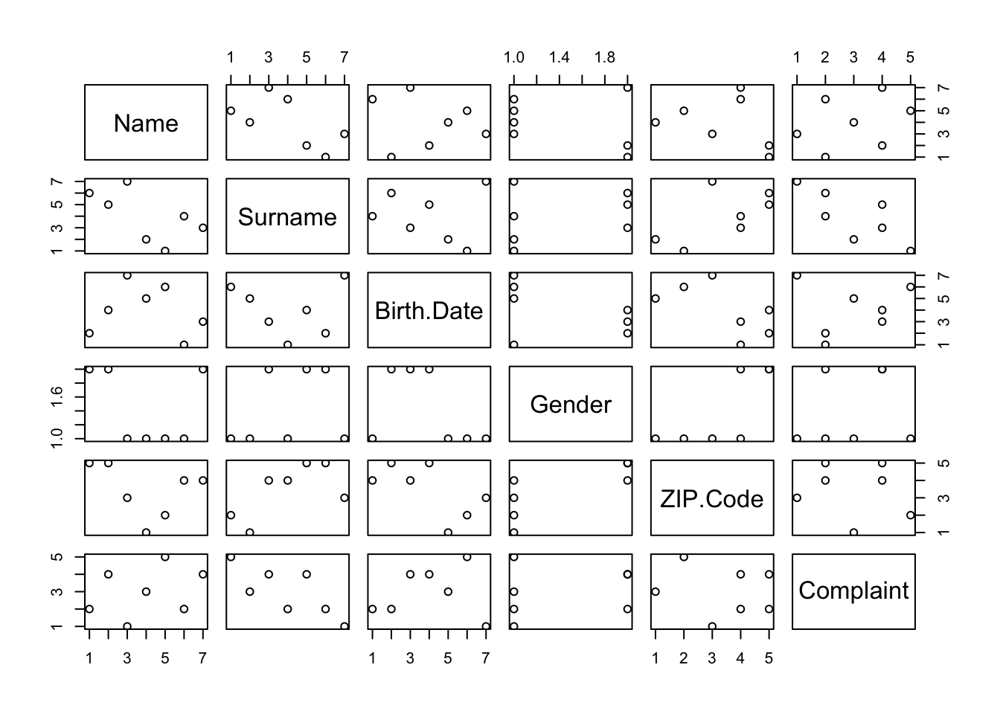
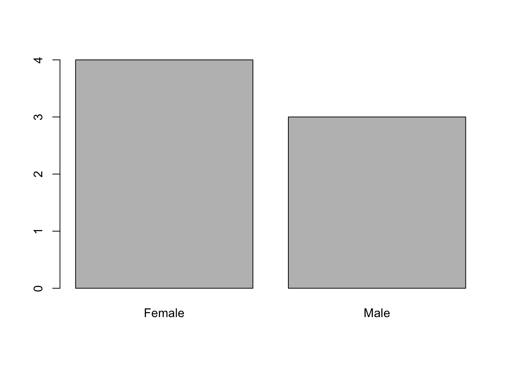

9 * 5[1] 45Don’t we all know it? Summer ends and we’ve forgotten where we left off before the break. Has this happened with your R programming? No problem! In this session, we’ll refresh your R skills and give you a boost for the upcoming academic year. On 6th of October, we will cover the technical basics (basic syntax, how to run R scripts, and how to install and load packages), simple data processing (how to import and explore your data), and basic visualization (using base plots and ggplot2).
Before we start looking at how to use R to analyze your data, let’s have a look at the technical basics. We will refresh how to name objects, how to use comments, what a function is and how to find out which arguments it needs. After that, we will shortly look at data types and how to run RScripts and how to install and load packages.
You can use R similar to a calculator. It is possible to just type in numbers into your console and receive results immediately.
9 * 5[1] 45Everything that you create (and that exists) in R is an object. To be able to use them efficiently, we can name objects. For that, we use the assignment operator <-.
result <- 9 * 5If we want to print the value of an object, you can run a line that just contains the object name.
result[1] 45R offers various in-built functions, i.e., a block of code that runs when the function is used. To use a function, we use its name and provide it with the needed arguments, i.e., the input that the function needs to run. In the following example, we use the function sqrt to calculate the square root of 4.
sqrt(4)[1] 2If you want to know more about a function, you can use the ? to access the documentation.
?sqrt()In R, vectors are a commonly used data type. Vectors consists of a series of values which can be connected using the c()-function.
my_vector <- c(1,2,3,4,5) # 1,2,3 are numeric data types
my_vector[1] 1 2 3 4 5We can also store characters in a vector. Characters are indicated with " ".
my_second_vector <- c("these","are","characters") # these words are seen as character data type
my_second_vector[1] "these" "are" "characters"Aside from numeric and character data types, R also allows to use logical data (TRUE vs. FALSE), integer, complex and raw.
You can use various function on vectors (and even subset them). Commonly used are the following:
length(my_vector) # returns the length of the vector[1] 5typeof(my_vector) # returns the type of the vector (e.g., character)[1] "double"str(my_vector) # returns an overview of the structure of the vector num [1:5] 1 2 3 4 5You can run R code either through the command line or by using an R script. Usually, you run the code line by line. An example of an R script can be found in our Programming Café session on IDEs in which we present how RStudio can be used to run R scripts.
To install new packages, you can use the command install.packages("PACKAGE"). To import packages and use them in your code, use library(PACKAGE). The following example shows how to install and import ggplot2.
```{r}
install.packages("ggplot2")
library(ggplot2)
```While we cannot cover data analyses in this short session, I want to shortly remind you how to import, explore, slightly manipulate and visualize your data.
You can import your data with the help of various packages. The most straight-forward way is to use one of the following functions:
# Read file in table format (each row is one line in the document)
data <- read.table(file = "data/documents.csv", header = TRUE, sep = "\t")
# import file with sep = "\t"
data <- read.delim(file = "data/documents.csv")
# import .csv file
data <- read.csv(file = "data/documents.csv") You can have a look at your data with various in-built functions. The following overview is taken from the Data Carpentry for SSH workshop and adapted to fit our example:
dim(data) # - returns a vector with the number of rows as the first element, and the number of columns as the second element (the dimensions of the object)[1] 7 6nrow(data) # - returns the number of rows[1] 7ncol(data) # - returns the number of columns[1] 6head(data) #- shows the first 6 rows Name Surname Birth.Date Gender ZIP.Code Complaint
1 Sean Curtis 20-9-1965 Male 2141 Short of breath
2 Daniel Smith 14-2-1965 Male 2142 Chest pain
3 Kate Adams 23-10-1965 Female 2138 Painful eye
4 Marion Aaker 24-8-1965 Female 2139 Wheezing
5 Helen Wackerman 7-11-1964 Female 2140 Aching joints
6 Reese Haberlandt 1-12-1964 Female 2141 Chest paintail(data) #- shows the last 6 rows Name Surname Birth.Date Gender ZIP.Code Complaint
2 Daniel Smith 14-2-1965 Male 2142 Chest pain
3 Kate Adams 23-10-1965 Female 2138 Painful eye
4 Marion Aaker 24-8-1965 Female 2139 Wheezing
5 Helen Wackerman 7-11-1964 Female 2140 Aching joints
6 Reese Haberlandt 1-12-1964 Female 2141 Chest pain
7 Forest Hacke 23-10-1964 Male 2142 Short of breathnames(data) #- returns the column names (synonym of colnames() for data.frame objects)[1] "Name" "Surname" "Birth.Date" "Gender" "ZIP.Code"
[6] "Complaint" str(data) #- structure of the object and information about the class, length and content of each column'data.frame': 7 obs. of 6 variables:
$ Name : chr "Sean" "Daniel" "Kate" "Marion" ...
$ Surname : chr "Curtis" "Smith" "Adams" "Aaker" ...
$ Birth.Date: chr "20-9-1965" "14-2-1965" "23-10-1965" "24-8-1965" ...
$ Gender : chr "Male" "Male" "Female" "Female" ...
$ ZIP.Code : int 2141 2142 2138 2139 2140 2141 2142
$ Complaint : chr "Short of breath" "Chest pain" "Painful eye" "Wheezing" ...summary(data) #- summary statistics for each column Name Surname Birth.Date Gender
Length:7 Length:7 Length:7 Length:7
Class :character Class :character Class :character Class :character
Mode :character Mode :character Mode :character Mode :character
ZIP.Code Complaint
Min. :2138 Length:7
1st Qu.:2140 Class :character
Median :2141 Mode :character
Mean :2140
3rd Qu.:2142
Max. :2142 As most of our data consists of characters, we might want to make some of them categorical variables. We can do that by casting them as factors using the as.factor()-function. We address the specific column using $.
data$Gender <- as.factor(data$Gender)
data$Complaint <- as.factor(data$Complaint)
data$ZIP.Code <- as.factor(data$ZIP.Code)Creating a base plot in R is as easy as typing plot(data).
plot(data)
For our data, the plot is not really helpful, but you can also focus on one specific column instead using $ to indicate the column name.
plot(data$Gender)
plot() allows for multiple other arguments to be used. You can find more information on it here.
A handy package to create plots is ggplot2. You can find a manual on how to visualize your data with it here.
Comments
Comments are a programmers friend. They help you to keep an overview of your code, understand what you did (and why) and keep your code readable. In R, you can use the
#character to create a comment. You can do this either behind a line of code, above or below it.You can also use comments to exclude specific lines of code from being run. To do that, you “comment out” a line of code. In the following example, we commented the line out that assigns
bthe new value20.